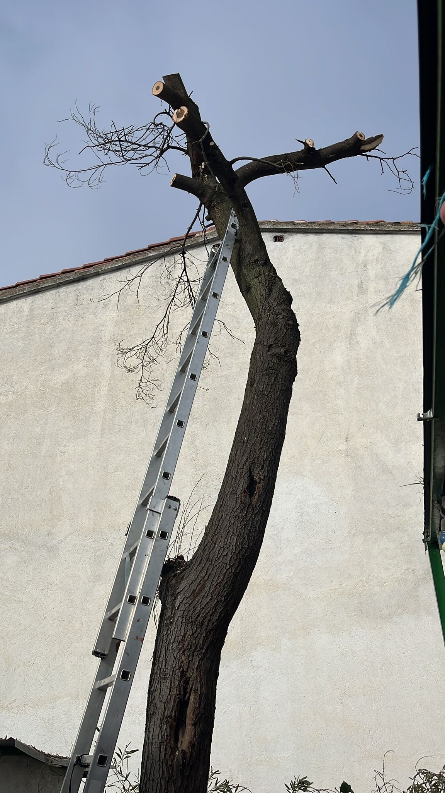
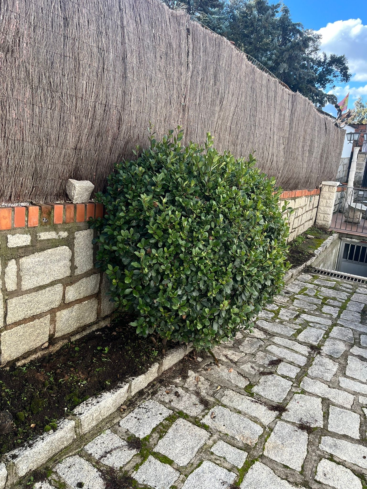
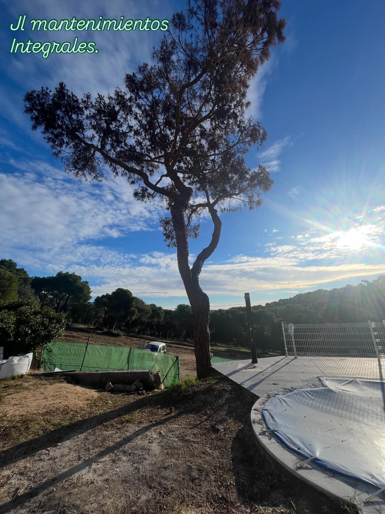
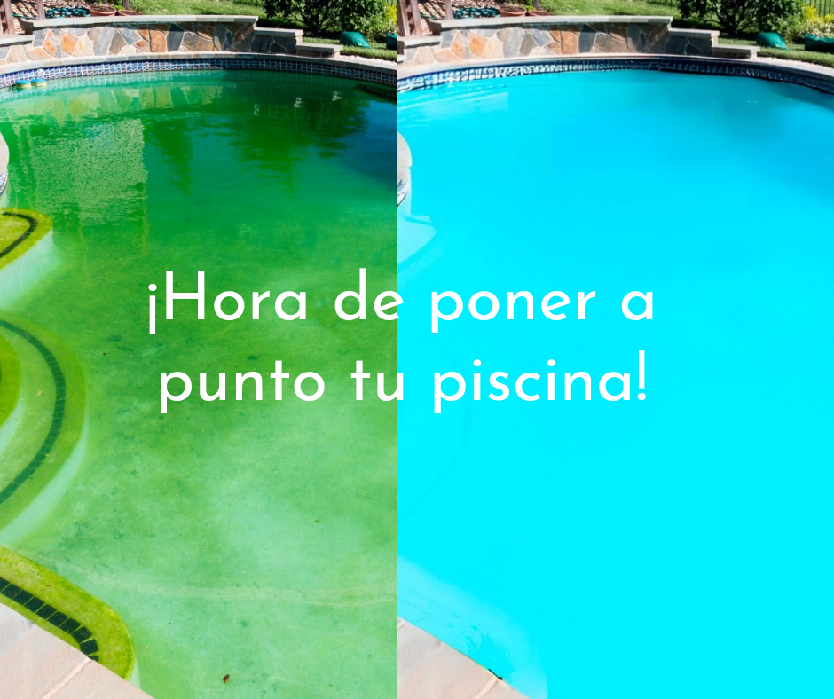
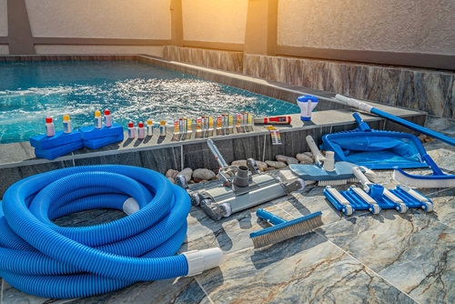

Poda de árboles
Poda, saneamiento y retirada de ramas para mejorar la seguridad y el aspecto del arbolado.
Madrid · Toledo · Ávila y alrededores
Poda de árboles, corte de setos, limpieza de parcelas, mantenimiento de jardines, puesta a punto y mantenimiento de piscinas para particulares, comunidades y empresas.
Servicios
Soluciones profesionales para dejar jardines, parcelas, zonas verdes y piscinas en perfecto estado durante todo el año.

Poda, saneamiento y retirada de ramas para mejorar la seguridad y el aspecto del arbolado.

Recorte, perfilado y limpieza para jardines ordenados, cuidados y presentables.

Desbroce, retirada de vegetación y limpieza de terrenos para recuperar espacios exteriores.

Cuidado general de césped, zonas comunes, exteriores de viviendas, comunidades y empresas.

Limpieza inicial, preparación para temporada y recuperación del agua para dejar la piscina lista.

Control, limpieza, mantenimiento periódico y revisión visual para disfrutar de una piscina cuidada.
Servicio de piscinas
Realizamos puesta a punto de piscinas para temporada y mantenimiento periódico para que el agua y el entorno se mantengan cuidados. Ideal para viviendas, chalets, comunidades y fincas.
SEO local · Zonas de trabajo
Nos desplazamos para trabajos de jardinería, limpieza de parcelas y mantenimiento de piscinas en las principales zonas de estas provincias.
Servicios para viviendas, comunidades, chalets, fincas y empresas en Madrid capital y alrededores.
Jardines · Setos · Parcelas · PiscinasLimpieza de parcelas, poda, mantenimiento de jardines y puesta a punto de piscinas en Toledo y alrededores.
Terrenos · Piscinas · Zonas verdesTrabajos de mantenimiento exterior para casas, fincas y comunidades en Ávila y municipios cercanos.
Poda · Desbroce · MantenimientoPor qué elegirnos
Cada jardín, parcela o piscina necesita una solución distinta. Revisamos el trabajo, escuchamos lo que necesitas y preparamos una propuesta clara para hacerlo de forma rápida y profesional.
Trabajos y resultados
Ejemplos visuales de mantenimiento exterior, limpieza de parcelas, corte de setos y servicios de piscina.
Cómo trabajamos
Envía tu consulta y preparamos una respuesta adaptada al tipo de trabajo que necesitas.
Cuéntanos qué necesitas por WhatsApp, llamada o formulario.
Revisamos zona, servicio, fotos si las tienes y detalles del trabajo.
Recibes una propuesta clara, sin compromiso y ajustada al servicio.
Realizamos el mantenimiento con profesionalidad y dejamos la zona limpia.
Preguntas frecuentes
Información útil para trabajos de jardinería, parcelas y piscinas en Madrid, Toledo y Ávila.
Trabajamos en Madrid, Toledo, Ávila y alrededores. Puedes indicarnos tu localidad por WhatsApp y te confirmamos disponibilidad.
Sí. Realizamos puesta a punto de piscinas, limpieza inicial, preparación para temporada y mantenimiento periódico.
Sí. Podemos encargarnos de jardines, setos, árboles, parcelas y zonas exteriores de viviendas, comunidades y empresas.
Sí. El presupuesto es personalizado y sin compromiso. El formulario prepara un mensaje de WhatsApp para que sea rápido.
Contacto
Dinos qué servicio necesitas, en qué zona estás y cómo podemos contactar contigo. Al enviar el formulario se abrirá WhatsApp con el mensaje preparado.